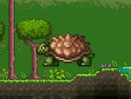

Terraria is truly a game. You can play it. As many critics would say, it plays like 2D Minecraft, if Minecraft lets you kill lovecraftian horrors with guns made of fire. Terraria is like Minecraft in that it is composed of blocks, but that is about it. Riddle me this, Minecraft lovers, does Minecraft let you chop a tree down. As in really chop a tree down
From building blocks to weapons to beings beyond your comprehension, Terraria has no shortage of literally anything, whether you like it or not. See that picture on the right? That is a giant tortoise. Looks unassuming, a gentle giant even. Right? Wrong. Whenever it wants to, this pain in the neck can reminisce about its childhood and spontaneously gain a desire to become his favorite blue hedgehog, with such an accurate impersonation as to be directly similar in all but one regard. He reduces anything he touches to atoms. You can be wearing armor enough to withstand the will of god. This man will not care. |
 |
And this is only ONE of the examples in this amazing game where shenanigans are an intended feature, meaning hilarious play sessions with friends where you can capture clips of them screaming as you kill a butterfly that happens to summon the embodiment of the Sun.
If you too, wish to kill or be killed many, many times, purchase this game on steam today by clicking the icon below.